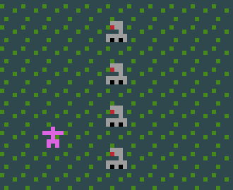
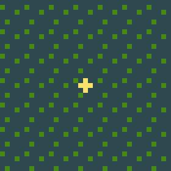

If you want a robot to move in a random direction each turn, do this:
[ Robot ] -> [randomDir Robot]
If you want a robot spawnpoint that generates randomly coloured robots, have this in your legend
Robot = RedRobot or GreenRobot or BlueRobotand then use this in your script
[ RobotSpawn no robot ] -> [ RobotSpawn random Robot]